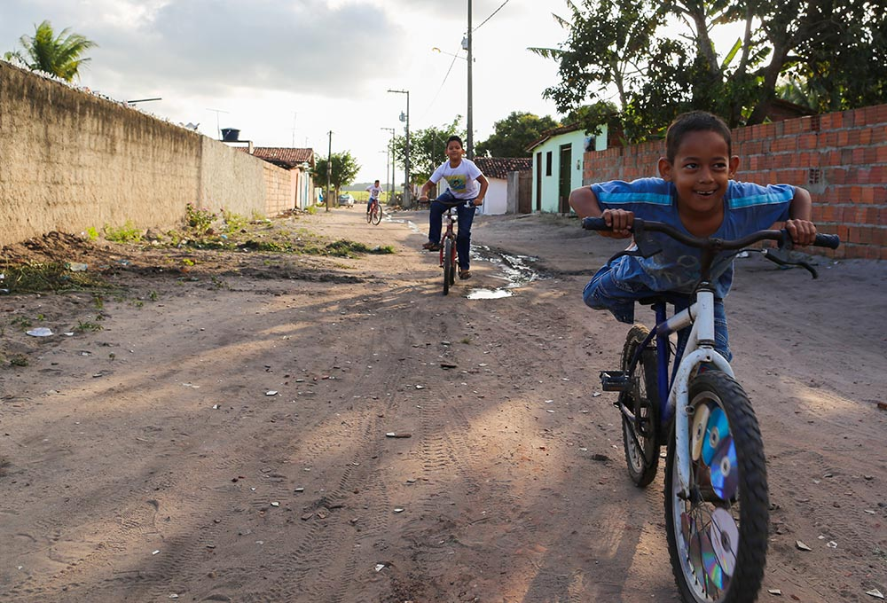
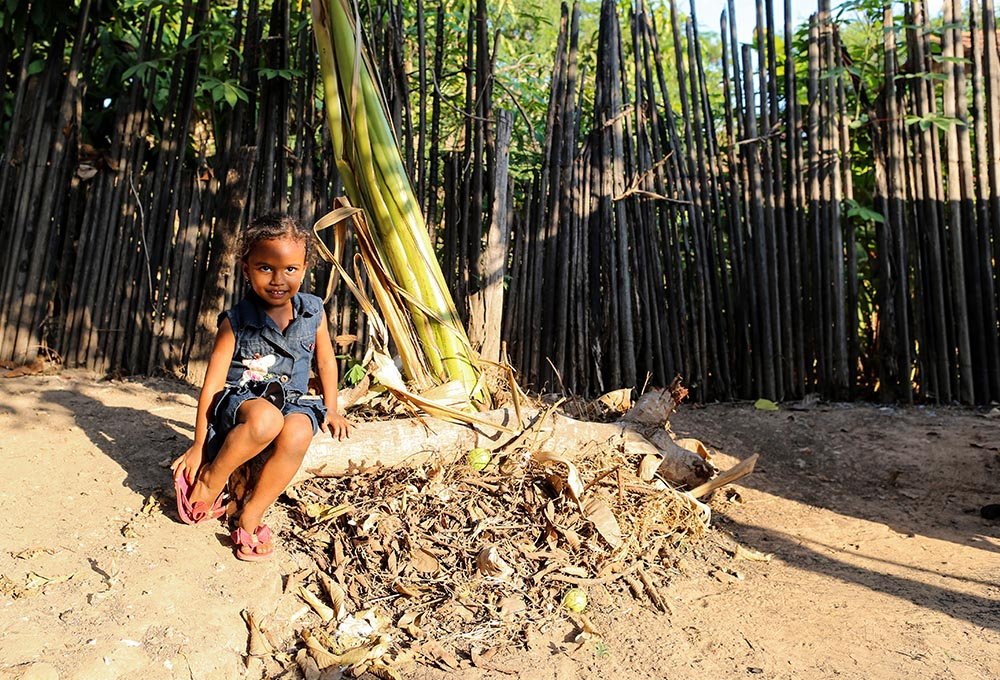
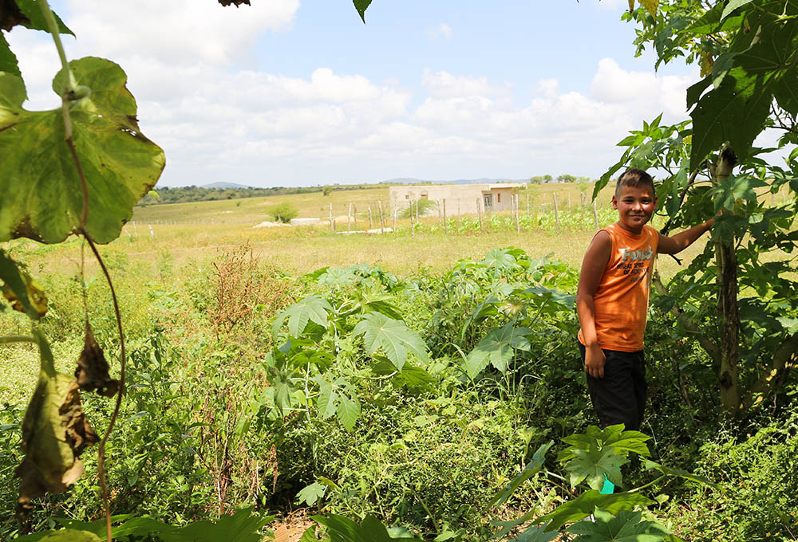

Act for the Assis brothers in Brazil

For years, Lucas, Eudemar and Andre lived in constant fear of losing their father. A raging alcoholic, Eldir was often involved in street fights and regularly beat their mother, Jacqueline. The kids had already lost their grandfather to community violence and couldn’t stand the thought of losing their father as well.
But when their mother started to volunteer at the local Compassion community center, the boys found hope in the form of prayer, which they directed towards their father’s salvation. One night during home worship, Eldir found the strength to replace alcohol with faith, and for the first time in their lives, the boys knew promise.
Since then, the family has been an integral part of both Compassion and the local church community. Eldir participates in counseling and plays guitar at church services, Jacqueline continues to volunteer at the community center, and the three children are sponsored by the Child Development Sponsorship Program (CDSP).
"Every night we thank God for having saved our father"
Act for Morgana in Brazil

Three-year-old Morgana lives with her mother, Rosilda, and her bother, Dheric.
Rosilda, under threat of violence from her father, was forced to give up her first child for adoption at the age of 18, causing extreme guilt and crippling depression for over a decade. Now 29, she’s blessed with two beautiful children and is in the process of putting her life back together.
Compassion was instrumental in helping Rosilda move past her depression, building up her confidence as both a mother and a person in the process. Today, she volunteers at the local church, attends partner church activities and sees to the needs of both Morgana and Dheric. She’s also learned to look towards the future instead of being stuck in the past. “I don’t know where I would be at this point of my life without the program’s help,” she says.
“I’ve got my 2 children, my treasures, and I love them. I needed strength to carry on – and Compassion helped me find that strength.”
Act for Jesus Gabriel in Brazil

Nine-year-old Jesus Gabriel lives with his single mother and seven siblings in a small brick house that has two bedrooms, one bathroom and a living room. The house is located in Casserengue, one of the most impoverished cities in Northeast Brazil . where 45% of the population lives on less than $35 a month. There are no job opportunities to speak of and food and water are scarce. In fact, the only thing the city seems to have in abundance are drugs and alcohol.
Despite all this, Jesus is a shining example of how it’s possible to keep dreaming in the face of challenging circumstances. He’s wanted to be a pilot since before he can remember, and it’s through the support of his Compassion sponsor and the community center that he’s able to keep his dream alive.
"My sponsor told me one day I will be able to fly to many places... the Lord will provide this for me"